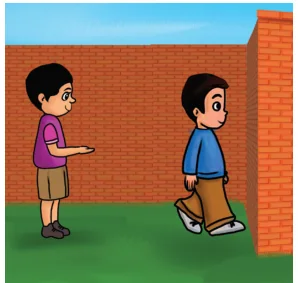
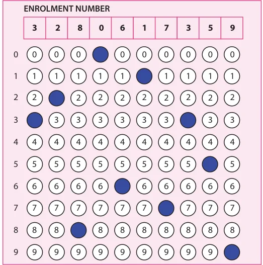
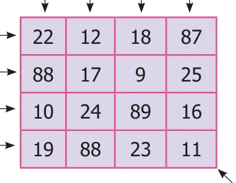

Do you know the robot game? One child acts as a robot. Another child gives instructions to the child enacting as robot. The robot child should follow instructions. If the robot child stands at the wall by facing it, the instructor has to say, "move forward'. The robot child can only try to move forward, but can't. The robot child cannot say "it is not possible". This humorous activity shows that instructions are mechanically followed by robots. Unlike robots, human brain is capable of thinking and modifying algorithms based on situations.
Think about the situation
Recipe for preparing lemonade for a group of 6 members.
- Squeeze 3 half lemons in a bowl.
- Add 5 glasses of normal water into the bowl.
- Add 4 teaspoons of sugar into the lemon juice.
- Stir the content well.
- Filter the content.
- Pour the filtered content into 6 glasses and serve.
Using the above instructions, prepare lemonade for 12 members, 24 members and 3 members.
Example 2
Follow the instructions in the given puzzle to arrive at the same number (36).
Instructions
- Think of a number from 1 to 9.
- Multiply it by 9.
- If you have two digit number, add the digits together.
- Subtract 3 from the answer.
- Multiply the number by itself.
Solution
Let us take a number: \(6\)
Multiply it by 9 : \(9 \times 6 = 54\)
Add the digits together : \(5 + 4 = 9\)
Subtract 3 from the answer : \(9 - 3 = 6\)
Multiply the number by itself : \(6 \times 6 = 36\)
Try for number other than 6.
Example 3
You need to read the instructions carefully before filling the OMR sheet. The given OMR sheet is shaded based on the following instructions.
Solution

Instructions
- Observe the enrolment number written on the top row.
- The digits are to be shaded from left to right.
- Shade the corresponding bubbles under each of the number boxes.
- Only one digit is to be shaded in each column.
- Use only ball point pen for shading the bubbles.
This activity is very important as children need to fill OMR for various examinations like NAS, NMMS.
Example 4
Observe the given \(4 \times 4\) square grid and follow the instructions given below to appreciate the uniqueness of the arrangement of numbers that gives the total 139.

Instructions
- Add the numbers horizontally.
- Add the numbers vertically.
- Add the numbers diagonally.
- Add the numbers in the four corners of the square.
- Divide the square into four \(2 \times 2\) squares and add all the numbers in each of the squares.
Each of the above instructions gives the same answer. Doesn't it?
In all the above examples, we note that delivering instructions as well as following them are interesting.
Try these
- The teacher should give oral instructions to the students to draw the geometrical figure already drawn by him / her.
- Draw a square. In the middle of the square, draw a circle in such a way that the circle does not touch any side of the square. Divide the circle into four equal parts. Shade the bottom right part of the circle. Ask the students to show that figure drawn by them.
- Draw a triangle on a piece of paper. Make it crazy looking by adding some features. Give instructions to your friend to draw it exactly the same.
- Suppose your friend wants to come to your house from his / her house. Give clear instructions in order, to reach your house.